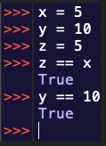
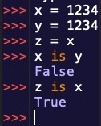

This lesson will go over logical and comparative operators.
Python has several comparative operators.
The first are less than, and greater than.
Less than ‘<’
Greater than ‘>’
Then there are modifications of these two operators:
less than or equal to "<="
and greater than or equal to ">="
Next is the "==" operator, this checks for equality amongst 2 items

Next, we have the 3 logical operators: "and" "or" and "not"
These values will give a result based on Boolean values.
The “and” operator will be true if both values are true.
The “or” operator will be true if either value are true.
The not operator will be true if a condition is false.
Let’s look at some examples!
Finally, we have the logical operator "is". This operator checks if two objects are the same, not equal. Let's look at an example of this:
Although x and y have the same value, they are not the same object, which is why x is y is not true. The is operator is not used as much as the other logical operators but is useful to be aware of.
Overall, logical operators are integral tools to understand. Make sure to review these if you feel confused, as they will be very neccessary in the next unit.